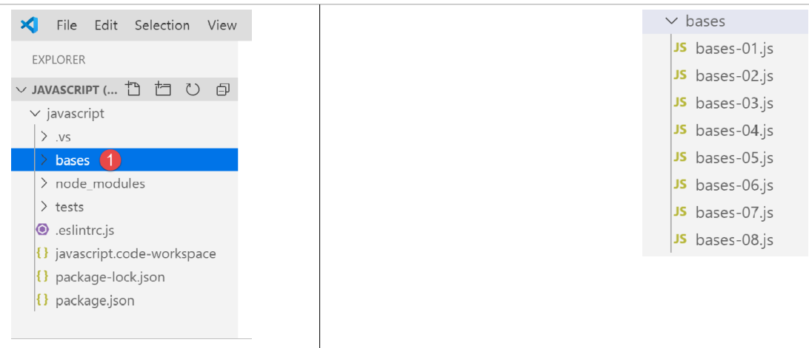

3. Les bases de Javascript
Note : dans la suite, le terme [Javascript] désignera toujours la norme ECMAScript 6.
A l’intérieur du projet Javascript précédent, créez un dossier [bases]. Nous y mettrons les exemples de cette section :

3.1. script [bases-01]
Pour introduire les bases de PHP7, nous avions utilisé le code suivant(cf. paragraphe lien) :
| <?php
// ceci est un commentaire
// variable utilisée sans avoir été déclarée
$nom = "dupont";
// un affichage écran
print "nom=$nom\n";
// un tableau avec des éléments de type différent
$tableau = array("un", "deux", 3, 4);
// son nombre d'éléments
$n = count($tableau);
// une boucle
for ($i = 0; $i < $n; $i++) {
print "tableau[$i]=$tableau[$i]\n";
}
// initialisation de 2 variables avec le contenu d'un tableau
list($chaine1, $chaine2) = array("chaine1", "chaine2");
// concaténation des 2 chaînes
$chaine3 = $chaine1 . $chaine2;
// affichage résultat
print "[$chaine1,$chaine2,$chaine3]\n";
// utilisation fonction
affiche($chaine1);
// le type d'une variable peut être connu
afficheType("n", $n);
afficheType("chaine1", $chaine1);
afficheType("tableau", $tableau);
// le type d'une variable peut changer en cours d'exécution
$n = "a changé";
afficheType("n", $n);
// une fonction peut rendre un résultat
$res1 = f1(4);
print "res1=$res1\n";
// une fonction peut rendre un tableau de valeurs
list($res1, $res2, $res3) = f2();
print "(res1,res2,res3)=[$res1,$res2,$res3]\n";
// on aurait pu récupérer ces valeurs dans un tableau
$t = f2();
for ($i = 0; $i < count($t); $i++) {
print "t[$i]=$t[$i]\n";
}
// des tests
for ($i = 0; $i < count($t); $i++) {
// n'affiche que les chaînes
if (getType($t[$i]) === "string") {
print "t[$i]=$t[$i]\n";
}
}
// opérateurs de comparaison == et ===
if("2"==2){
print "avec l'opérateur ==, la chaîne 2 est égale à l'entier 2\n";
}else{
print "avec l'opérateur ==, la chaîne 2 n'est pas égale à l'entier 2\n";
}
if("2"===2){
print "avec l'opérateur ===, la chaîne 2 est égale à l'entier 2\n";
}
else{
print "avec l'opérateur ===, la chaîne 2 n'est pas égale à l'entier 2\n";
}
// d'autres tests
for ($i = 0; $i < count($t); $i++) {
// n'affiche que les entiers >10
if (getType($t[$i]) === "integer" and $t[$i] > 10) {
print "t[$i]=$t[$i]\n";
}
}
// une boucle while
$t = [8, 5, 0, -2, 3, 4];
$i = 0;
$somme = 0;
while ($i < count($t) and $t[$i] > 0) {
print "t[$i]=$t[$i]\n";
$somme += $t[$i]; //$somme=$somme+$t[$i]
$i++; //$i=$i+1
}//while
print "somme=$somme\n";
// fin programme
exit;
//----------------------------------
function affiche($chaine) {
// affiche $chaine
print "chaine=$chaine\n";
}
//affiche
//----------------------------------
function afficheType($name, $variable) {
// affiche le type de $variable
print "type[variable $" . $name . "]=" . getType($variable) . "\n";
}
//afficheType
//----------------------------------
function f1($param) {
// ajoute 10 à $param
return $param + 10;
}
//----------------------------------
function f2() {
// rend 3 valeurs
return array("un", 0, 100);
}
?>
|
Traduit en Javascript, cela donne le code suivant :
| 'use strict';
// ceci est un commentaire
// constante
const nom = "dupont";
// un affichage écran
console.log("nom : ", nom);
// un tableau avec des éléments de type différent
const tableau = ["un", "deux", 3, 4];
// son nombre d'éléments
let n = tableau.length;
// une boucle
for (let i = 0; i < n; i++) {
console.log("tableau[", i, "] = ", tableau[i]);
}
// initialisation de 2 variables avec le contenu d'un tableau
let [chaine1, chaine2] = ["chaine1", "chaine2"];
// concaténation des 2 chaînes
const chaine3 = chaine1 + chaine2;
// affichage résultat
console.log([chaine1, chaine2, chaine3]);
// utilisation fonction
affiche(chaine1);
// le type d'une variable peut être connu
afficheType("n", n);
afficheType("chaine1", chaine1);
afficheType("tableau", tableau);
// le type d'une variable peut changer en cours d'exécution
n = "a changé";
afficheType("n", n);
// une fonction peut rendre un résultat
let res1 = f1(4);
console.log("res1=", res1);
// une fonction peut rendre un tableau de valeurs
let res2, res3;
[res1, res2, res3] = f2();
console.log("(res1,res2,res3)=", [res1, res2, res3]);
// on aurait pu récupérer ces valeurs dans un tableau
let t = f2();
for (let i = 0; i < t.length; i++) {
console.log("t[i]=", t[i]);
}
// des tests
for (let i = 0; i < t.length; i++) {
// n'affiche que les chaînes
if (typeof (t[i]) === "string") {
console.log("t[i]=", t[i]);
}
}
// opérateurs de comparaison == et ===
if ("2" == 2) {
console.log("avec l'opérateur ==, la chaîne 2 est égale à l'entier 2");
} else {
console.log("avec l'opérateur ==, la chaîne 2 n'est pas égale à l'entier 2");
}
if ("2" === 2) {
console.log("avec l'opérateur ===, la chaîne 2 est égale à l'entier 2");
} else {
console.log("avec l'opérateur ===, la chaîne 2 n'est pas égale à l'entier 2");
}
// d'autres tests
for (let i = 0; i < t.length; i++) {
// n'affiche que les entiers >10
if (typeof (t[i]) === "number" && Math.floor(t[i]) === t[i] && t[i] > 10) {
console.log("t[i]=", t[i]);
}
}
// une boucle while
t = [8, 5, 0, -2, 3, 4];
let i = 0;
let somme = 0;
while (i < t.length && t[i] > 0) {
console.log("t[i]=", t[i]);
somme += t[i];
i++;
}
console.log("somme=", somme);
// arrêt du programme car il n'y a plus de code exécutable
//affiche
//----------------------------------
function affiche(chaine) {
// affiche chaine
console.log("chaine=", chaine);
}
//afficheType
//----------------------------------
function afficheType(name, variable) {
// affiche le type de variable
console.log("type[variable ", name, "]=", typeof (variable));
}
//----------------------------------
function f1(param) {
// ajoute 10 à param
return param + 10;
}
//----------------------------------
function f2() {
// rend 3 valeurs
return ["un", 0, 100];
}
|
Commentons les différences entre les codes PHP et ECMAScript 6 avec la déclaration [use strict] (ligne 1) :
- la 1ère différence est qu’en ECMAScript on déclare les variables avec les mots clés suivants :
- [let] pour déclarer une variable dont la valeur peut changer au cours de l’exécution du code ;
- [const] pour déclarer une variable dont la valeur ne va pas changer (une constante donc) au cours de l’exécution du code ;
- on peut également utiliser le mot clé [var] à la place de [let]. C’était le mot clé utilisé avec ECMAScript 5. Nous ne l’utiliserons pas dans ce cours ;
- ligne 6 : la méthode d’affichage [console.log] peut afficher toutes sortes de données : chaînes, nombres, booléens, tableaux, objets. La méthode PHP [print] ne sait pas afficher nativement des tableaux et objets. Dans l’expression [console.log], [console] est un objet et [log] une méthode de cet objet ;
- ligne 8 : les tableaux Javascript sont des objets référencés par un pointeur. Lorsqu’on écrit :
| const tableau = ["un", "deux", 3, 4];
|
la variable [tableau] est un pointeur sur le tableau littéral ["un", "deux", 3, 4]. Modifier le contenu du tableau ne modifie pas son pointeur. Aussi un tableau sera-t-il le plus souvent déclaré avec le mot clé [const]. En PHP, un tableau n’est pas référencé par un pointeur. C’est une donnée littérale ;
- ligne 12 : la variable de boucle [i] est déclarée (let) dans la boucle. Le mot clé [let] respecte la portée de bloc (code entre accolades). Ainsi la variable [i] de la ligne 12 n’est-elle connue que dans la boucle ;
- ligne 18 : l’opérateur de concaténation de chaîne est l’opérateur + en Javascript, . en PHP. Une particularité de cet opérateur est qu’il a précédence sur l’opérateur + d’addition. Ainsi :
- en PHP, ‘1’ +2 donne le nombre 3 ;
- en Javascript ‘1’+2 donne la chaîne ‘12’ ;
- ligne 20 : [console.log] sait afficher des tableaux ;
- ligne 82 : en Javascript, il n’est pas possible d’indiquer le type des paramètres d’une fonction ;
- ligne 91 : l’opérateur [typeof] permet de connaître le type d’une donnée. Il y en a quatre : nombre, chaîne de caractères, booléen et objet. On notera qu’en Javascript on n’a pas de type [integer] ni de type [tableau]. Comme il a été dit, les tableaux sont manipulés via des pointeurs et tombe dans la catégorie des objets ;
- lignes 50-59 : comme en PHP, Javascript a deux opérateurs de comparaison, == et ‘===’ avec la même signification qu’en PHP. ESLint signale le plus souvent l’opérateur == comme une erreur possible. On utilisera systématiquement l’opérateur ‘===’ ;
- ligne 79 : on aurait pu mettre l’instruction [return] mais ESLint émet l’avertissement que [return] ne doit s’utiliser que dans une fonction ;
Exécutons ce code :

Les résultats de l’exécution :
| [Running] C:\myprograms\laragon-lite\bin\nodejs\node-v10\node.exe "c:\Temp\19-09-01\javascript\bases\bases-01.js"
nom : dupont
tableau[ 0 ] = un
tableau[ 1 ] = deux
tableau[ 2 ] = 3
tableau[ 3 ] = 4
[ 'chaine1', 'chaine2', 'chaine1chaine2' ]
chaine= chaine1
type[variable n ]= number
type[variable chaine1 ]= string
type[variable tableau ]= object
type[variable n ]= string
res1= 14
(res1,res2,res3)= [ 'un', 0, 100 ]
t[ 0 ]= un
t[ 1 ]= 0
t[ 2 ]= 100
t[ 0 ]= un
avec l'opérateur ==, la chaîne 2 est égale à l'entier 2
avec l'opérateur ===, la chaîne 2 n'est pas égale à l'entier 2
t[ 2 ]= 100
t[ 0 ]= 8
t[ 1 ]= 5
somme= 13
[Done] exited with code=0 in 0.316 seconds
|
Dans le code écrit, ESLINT signale deux erreurs :

- en passant le curseur sur la ligne rouge de l’avertissement, on a le message d’erreur [3]. Ici ESLint ne comprend pas qu’on compare deux constantes. L’un des deux opérandes devrait être une variable ;
- en [4], une option [Quick Fix] permet de lever l’avertissement si on décide de ne pas corriger l’erreur ;

- en [5], on a la possibilité de désactiver l’avertissement pour la ligne courante ou pour l’ensemble du fichier. C’est cette dernière option que nous choisissons ici . La ligne [6] est alors générée au début du fichier ;
3.2. script [bases-02]
Le script [bases-02] montre l’utilisation des mots clés [let] et [const] :
| 'use strict';
// pour initialiser une variable, on utilise let ou const
// let pour les variables
let x = 4;
x++;
console.log(x);
// const pour les constantes
const y = 10;
x += y;
// interdit
y++;
|
- la ligne 11 provoque une erreur à l’exécution [1-2]. Elle est signalée par ESLint avant l’exécution [3] :

3.3. script [bases-03]
Le script [bases-03] examine la portée des variables en Javascript :
| 'use strict';
// portée des variables
let count = 1;
function doSomething() {
// count est ici connu
console.log("count=",count);
}
// appel
doSomething();
|
- la variable [count] déclarée en-dehors de la fonction [doSomething] est pourtant connue dans cette fonction. C’est une différence fondamentale avec PHP ;
Exécution
| [Running] C:\myprograms\laragon-lite\bin\nodejs\node-v10\node.exe "c:\Temp\19-09-01\javascript\bases\bases-03.js"
count= 1
[Done] exited with code=0 in 0.3 seconds
|
3.4. script [bases-04]
Une variable locale cache une variable globale de même nom :
| 'use strict';
// portée des variables
const count = 1;
function doSomething() {
// la variable locale cache la variable globale
const count = 2;
console.log("count inside function=",count);
}
// variable globale
console.log("count outside function=",count);
// variable locale
doSomething();
|
Exécution
| [Running] C:\myprograms\laragon-lite\bin\nodejs\node-v10\node.exe "c:\Temp\19-09-01\javascript\bases\bases-04.js"
count outside function= 1
count inside function= 2
[Done] exited with code=0 in 0.246 seconds
|
3.5. script [bases-05]
Une variable définie dans une fonction n’est pas connue en-dehors de celle-ci :
| 'use strict';
// portée des variables
function doSomething() {
// variable locale à la fonction
const count = 2;
console.log("count inside function=", count);
}
// ici count n'est pas connu
console.log("count outside function=", count);
doSomething();
|
ESLint déclare une erreur sur la ligne 9 :

3.6. script [bases-06]
Les mots clés [let] et [const] définissent des variables de portée [bloc] (code entre accolades) mais pas le mot clé [var] :
| 'use strict';
// le mot clé [let] permet de définir une variable de portée bloc
{
// la variable [count] n'est connue que dans ce bloc
let count = 1;
console.log("count=", count);
}
// ici la variable [count] n'est pas connue
count++;
// le mot clé [const] permet de définir une variable de portée bloc
{
// la variable [count2] n'est connue que dans ce bloc
const count2 = 1;
console.log("count=", count2);
}
// ici la variable [count2] n'est pas connue
count2++;
// le mot clé [var] ne permet pas de définir une variable de portée bloc
{
// la variable [count3] sera connue globalement
var count3 = 1;
console.log("count=", count3);
}
// ici la variable [count3] est connue
count3++;
|
Commentaires
- ligne 5 : la variable [count] n’est connue que dans le bloc de code dans laquelle elle est déclarée (lignes 3-7) ;
- ligne 14 : la constante [count2] n’est connue que dans le bloc de code dans laquelle elle est déclarée (lignes 12-16) ;
- ligne 23 : la variable [count3] est connue en-dehors du bloc de code dans laquelle elle est déclarée (lignes 21-25) ;
ESLint déclare les erreurs suivantes :

Pour ces raisons de portée de bloc, nous n’utiliserons par la suite que les mots clés [let] et [const].
3.7. script [bases-07]
Les types de données en Javascript :
| 'use strict';
// type de données jS
const var1 = 10;
const var2 = "abc";
const var3 = true;
const var4 = [1, 2, 3];
const var5 = {
nom: 'axèle'
};
const var6 = function () {
return +3;
}
// affichage des types
console.log("typeof(var1)=", typeof (var1));
console.log("typeof(var2)=", typeof (var2));
console.log("typeof(var3)=", typeof (var3));
console.log("typeof(var4)=", typeof (var4));
console.log("typeof(var5)=", typeof (var5));
console.log("typeof(var6)=", typeof (var6));
|
Exécution
| [Running] C:\myprograms\laragon-lite\bin\nodejs\node-v10\node.exe "c:\Temp\19-09-01\javascript\bases\bases-07.js"
typeof(var1)= number
typeof(var2)= string
typeof(var3)= boolean
typeof(var4)= object
typeof(var5)= object
typeof(var6)= function
[Done] exited with code=0 in 0.26 seconds
|
Commentaires
- ligne 7 (code) : un tableau est un objet. A ce titre [var4] est un pointeur vers le tableau, pas le tableau lui-même ;
- ligne 8 (code) : [var5] est un pointeur vers un objet littéral. On verra que les objets littéraux de Javascript ressemblent fort aux instances de classe de PHP. Eux-aussi sont référencés via des pointeurs ;
- ligne 11 (code) : une variable peut être de type [fonction] (ligne 7 des résultats) ;
3.8. script [bases-08]
Ce script montre les changements de type possibles en Javascript.
| 'use strict';
// changements implicites de types
// type -->bool
console.log("---------------[Conversion implicite vers un booléen]------------------------------");
showBool("abcd");
showBool("");
showBool([1, 2, 3]);
showBool([]);
showBool(null);
showBool(0.0);
showBool(0);
showBool(4.6);
showBool({});
showBool(undefined);
function showBool(data) {
// la conversion de data en booléen se fait automatiquement dans le test qui suit
console.log("[data=", data, "], [type(data)]=", typeof (data), "[valeur booléenne(data)]=", data ? true : false);
}
// changements implicites de type vers un type numérique
console.log("---------------[Conversion implicite vers un nombre]------------------------------");
showNumber("12");
showNumber("45.67");
showNumber("abcd");
function showNumber(data) {
// data + 1 ne marche pas car alors jS fait une concaténation de chaînes plutôt qu'une addition
const nombre = data * 1;
console.log("[data=", data, "], [type(data)]=", typeof (data), "[nombre]=", nombre, "[type(nombre)]=", typeof (nombre));
}
// changements explicites de types vers un booléen
console.log("---------------[Conversion explicite vers un booléen]------------------------------");
showBool2("abcd");
showBool2("");
showBool2([1, 2, 3]);
showBool2([]);
showBool2(null);
showBool2(0.0);
showBool2(0);
showBool2(4.6);
showBool2({});
showBool2(undefined);
function showBool2(data) {
// la conversion de data en booléen se fait explicitement dans le test qui suit
console.log("[", data, "], [type(data)]=", typeof (data), "[valeur booléenne(data)]=", Boolean(data));
}
// changements explicites de type vers Number
console.log("---------------[Conversion explicite vers un nombre]------------------------------");
showNumber2("12.45");
showNumber2(67.8);
showNumber2(true);
showNumber2(null);
function showNumber2(data) {
const nombre = Number(data);
console.log("[data=", data, "], [type(data)]=", typeof (data), "[nombre]=", nombre, "[type(nombre)]=", typeof (nombre));
}
// vers String
console.log("---------------[Conversion explicite vers un string]------------------------------");
showString(5);
showString(6.7);
showString(false);
showString(null);
function showString(data) {
const chaîne = String(data);
console.log("[data=", data, "], [type(data)]=", typeof (data), "[chaîne]=", chaîne, "[type(chaîne)]=", typeof (chaîne));
}
// qqs conversions implicites inattendues
console.log("---------------[Autres cas]------------------------------");
const string1 = '1000.78';
// concaténation de chaînes par défaut
const data1 = string1 + 1.034;
console.log("data1=", data1, "type=", typeof (data1));
const data2 = 1.034 + string1;
console.log("data2=", data2, "type=", typeof (data2));
// conversion explicite vers nombre
const data3 = Number(string1) + 1.034;
console.log("data3=", data3, "type=", typeof (data3));
// true est converti en le nombre 1
const data4 = true * 1.18;
console.log("data4=", data4, "type=", typeof (data4));
// false est converti en le nombre 0
const data5 = false * 1.18;
console.log("data5=", data5, "type=", typeof (data5));
|
Exécution
| [Running] C:\myprograms\laragon-lite\bin\nodejs\node-v10\node.exe "c:\Data\st-2019\dev\es6\javascript\bases\bases-08.js"
---------------[Conversion implicite vers un booléen]------------------------------
[data= abcd ], [type(data)]= string [valeur booléenne(data)]= true
[data= ], [type(data)]= string [valeur booléenne(data)]= false
[data= [ 1, 2, 3 ] ], [type(data)]= object [valeur booléenne(data)]= true
[data= [] ], [type(data)]= object [valeur booléenne(data)]= true
[data= null ], [type(data)]= object [valeur booléenne(data)]= false
[data= 0 ], [type(data)]= number [valeur booléenne(data)]= false
[data= 0 ], [type(data)]= number [valeur booléenne(data)]= false
[data= 4.6 ], [type(data)]= number [valeur booléenne(data)]= true
[data= {} ], [type(data)]= object [valeur booléenne(data)]= true
[data= undefined ], [type(data)]= undefined [valeur booléenne(data)]= false
---------------[Conversion implicite vers un nombre]------------------------------
[data= 12 ], [type(data)]= string [nombre]= 12 [type(nombre)]= number
[data= 45.67 ], [type(data)]= string [nombre]= 45.67 [type(nombre)]= number
[data= abcd ], [type(data)]= string [nombre]= NaN [type(nombre)]= number
---------------[Conversion explicite vers un booléen]------------------------------
[ abcd ], [type(data)]= string [valeur booléenne(data)]= true
[ ], [type(data)]= string [valeur booléenne(data)]= false
[ [ 1, 2, 3 ] ], [type(data)]= object [valeur booléenne(data)]= true
[ [] ], [type(data)]= object [valeur booléenne(data)]= true
[ null ], [type(data)]= object [valeur booléenne(data)]= false
[ 0 ], [type(data)]= number [valeur booléenne(data)]= false
[ 0 ], [type(data)]= number [valeur booléenne(data)]= false
[ 4.6 ], [type(data)]= number [valeur booléenne(data)]= true
[ {} ], [type(data)]= object [valeur booléenne(data)]= true
[ undefined ], [type(data)]= undefined [valeur booléenne(data)]= false
---------------[Conversion explicite vers un nombre]------------------------------
[data= 12.45 ], [type(data)]= string [nombre]= 12.45 [type(nombre)]= number
[data= 67.8 ], [type(data)]= number [nombre]= 67.8 [type(nombre)]= number
[data= true ], [type(data)]= boolean [nombre]= 1 [type(nombre)]= number
[data= null ], [type(data)]= object [nombre]= 0 [type(nombre)]= number
---------------[Conversion explicite vers un string]------------------------------
[data= 5 ], [type(data)]= number [chaîne]= 5 [type(chaîne)]= string
[data= 6.7 ], [type(data)]= number [chaîne]= 6.7 [type(chaîne)]= string
[data= false ], [type(data)]= boolean [chaîne]= false [type(chaîne)]= string
[data= null ], [type(data)]= object [chaîne]= null [type(chaîne)]= string
---------------[Autres cas]------------------------------
data1= 1000.781.034 type= string
data2= 1.0341000.78 type= string
data3= 1001.814 type= number
data4= 1.18 type= number
data5= 0 type= number
|